谈谈Kafka中CAP定理的实践
如今绝大部分项目，大部分都是采用的分布式系统架构。分布式系统可以防止系统突然宕机导致服务整体不可用，可以从容的应对高并发请求，从而提高系统的可用性。但是如果实现一个分布式系统，经过一段时间的编码和设计，其实会发现并没有这么简单。
相比于单机系统，分布式系统需要多台服务器，而服务器之间的通信是需要绝对保障的；如果通信超时，会影响项目的正常运行；如果是分布式存储系统（不仅仅是），写入的数据也需要被同步到多台服务器上，数据更新肯定是有一定的延迟的，怎么权衡延迟时间和数据实时性的要求更需要被考虑；如果是Leader服务器宕机了，follower服务器需要立刻自动切换角色，提供服务，且要保证数据一致性等等，这些都是在分布式系统设计中需要被面对的问题。
有没有一个架构或框架，能够解决在分布式系统中面临的问题？答案是没有。这个问题起源于加州大学柏克莱分校（University of California, Berkeley）的计算机科学家埃里克·布鲁尔（Eric Brewer），在2000年的分布式计算原理研讨会（PODC）上提出的猜想。但在2002年，麻省理工学院的赛斯·吉尔伯特和南希·林奇证明了布鲁尔的猜想，使之成为一个定理，这个就是CAP定理（CAP theorem），也被称作布鲁尔定理（Brewer’s theorem）。
Kafka是一个典型的分布式系统，涉及到数据存储和数据传递（通信），Kafka在设计和开发的过程中，是怎么合理的解决分布式系统普遍面临的这些问题的呢？那么今天的这篇文章，来谈谈CAP理论在Kafka中的实践。
（篇幅稍长，可Mark后细看。）
理解CAP定理
CAP定理对于分布式系统的设计是一个很重要的参考，它指出对于一个分布式系统来说，不可能同时满足以下三点：
- 一致性（Consistency），表示数据一致性，即所有节点在同一时间的数据完全一致。
- 可用性（Availability），表示服务高可用，即分布式服务在正常响应时间内一直是可用状态。
- 分区容错性（Partition tolerance），分区相当于对通信的时限要求。即当遇到网络分区故障时，仍然可满足一致性和可用性服务。
根据定理，分布式系统只能满足三项中的两项而不可能满足全部三项。理解CAP理论最简单方式是想象两个节点分在分区两侧（出现网络分区故障），允许至少一个节点更新状态会导致数据不一致，即丧失了C性质（无法通信，数据不一致）。如果为了保证数据一致性，将分区一侧的节点设置为不可用，那么又丧失了A性质（服务高可用）。除非两个节点可以互相通信，才能既保证C又保证A，这又会导致丧失P性质（不满足分区容错）。
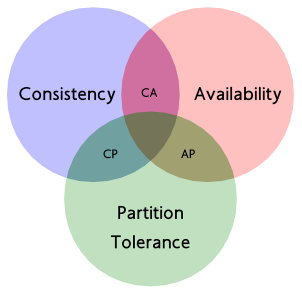对于需要在分布式条件下运行的系统而言，如果在一致性、可用性和分区容错性中取舍（或者说是弱化）哪一个属性是首要考虑的问题。在现实场景中，网络分区故障是比较容易出现的问题，并且人为因素也有可能导致，因此往往选择就在CP或者AP中，但是往往也不是严格的AP或者CP系统，比如Apache Zookeeper。
Zookeeper是用于分布式系统中的协调服务，用于同步，节点状态、配置等信息、服务注册等信息，所以一定得需要数据的一致性，任何时刻对ZooKeeper的访问请求能得到一致的数据结果。
我们采用理解CAP理论的方式来理解Zookeeper的设计：Zookeeper采用ZAB（ZooKeeper Atomic Broadcast）协议（崩溃恢复和消息广播模式），当出现网络崩溃等异常情况，ZAB协议进入恢复模式，并选举产生新的Leader服务器，当集群中已经有过半的Follower服务器完成了和Leader服务器的状态同步，那么整个服务框架就可以进入消息广播模式。当有同样遵守 ZAB 协议的服务器（因为出现了网络故障）启动后加入到集群中时，如果此时集群中已经存在一个 Leader 服务器在负责进行消息广播 ， 那么新加的服务器就会自觉地进入数据恢复模式：找到 Leader 所在的服务器，并与其进行数据同步，然后一起参与到消息广播流程中去，并提供数据一致性服务。
但是在恢复模式中，选举Leader节点可能花费时间较长，这就导致在选举期间服务会短暂不可用，但是服务能够最终是恢复了。所以说，在ZooKeeper设计中，为了实现CP特性，就不得不弱化了服务高可用性，但是这不代表Zookeeper完全失去了AP特性。
所以，如果将精力浪费在思考如何设计能满足三者的完美系统上是错误的路线，应该根据应用场景进行适当的配置来进行取舍。那么接下来我们看看Kafka在设计时，是如何进行适当的权衡。
Kafka可用性
对于分布式系统来说，当集群规模上升到一定程度后，一台或者多台机器宕机的可能性会大大提高，这是一个概率问题。所以，对于Failover机制的要求也非常高，对于Kafka消息引擎系统而言，如果频繁出现数据丢失或在一定时间内服务不可用的问题，这绝对不是不可容忍的，于是Kafka在0.8版本之后，经由Zookeeper提供了High Availablity机制。
Broker Failover
在Kafka集群中有一个Controller角色，主要作用是在ZooKeeper的帮助下管理和协调整个 Kafka集群。集群中任意一台Broker都能充当Controller角色，但是，在运行过程中，只能有一个 Broker成为Controller，行使其管理和协调的职责。
Controller Broker的主要职责有很多，主要包括以下几个方面：
- 创建、删除主题，增加分区并分配leader分区
- 集群Broker管理（新增 Broker、Broker 主动关闭、Broker故障)
- Leader选举
- 分区重分配
Broker在启动时，会尝试去 ZooKeeper 中创建/controller节点。Kafka当前选举控制器的规则是：第一个成功创建 /controller 节点的 Broker 会被指定为Controller Broker。
我们理解CAP定理的方式是假设集群出现网络分区或故障的情况，再来考虑是否满足其他特性的方式。所以我们假设Kafka集群中出现脑裂现象，即导致的结果是存在两个Controller Broker，它们可能一起发出具有冲突的命令。
Kafka是通过使用epoch number（纪元编号，也称为隔离令牌）来完成的。epoch number只是单调递增的数字，第一次选出Controller Broker时，epoch number值为1；如果再次选出新的Controller，则epoch number将为2，依次单调递增。
每个新选出的Controller通过Zookeeper的递增操作获得一个全新的、数值更大的epoch number 。其他Broker在知道当前epoch number 后，如果收到由controller发出的包含较旧（较小）epoch number的消息，就会忽略它们，即Broker根据最大的epoch number来区分当前最新的Controller。
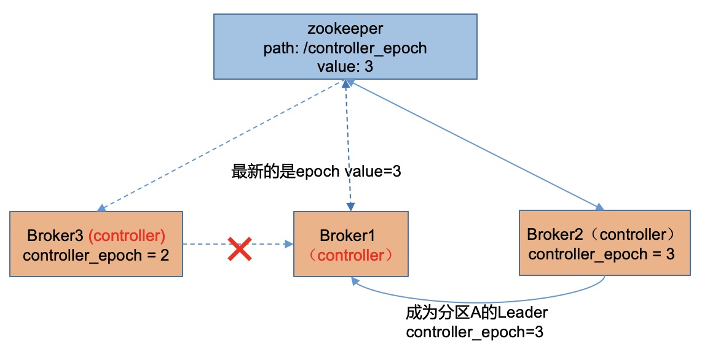通过这个机制，我们就可以解决脑裂问题，也就是在存在P的情况下，保证了A性质。这里，我们都说可用性保证的是服务的高可用；但是在Kafka只要有一台Broker正常存在，也可以继续提供服务的，我们可以继续思考：如果Kafka服务保证高可用了，那么高可用的服务能提供高可用的消息吗？
显而易见，如果一旦有一个或多个Broker宕机，如果没有高可用机制，则宕机期间其上所有Partition都无法继续提供服务；如果该Broker出现了磁盘故障，永远不能再恢复了，那么该服务器上所有的数据就彻底丢失了，那么消息是否能够正常获取或消费，决定着Kafka是否能够提供正常服务。所以，对于Kafka而言，提供的是消息可用性服务；那服务高可用在于，保证Kafka中消息的高可用性。
所以，Kafka在保障消息的高可用性上，推出了几项机制：
- 引入Replication机制，分配Replica。
- 动态维护ISR副本集合，选举Leader提供消息服务。
Replication机制
在Kafka消息日志解析中，我们讨论过，Kafka消息设计是三层结构：主题-分区-消息。分区是为了实现高伸缩性和提供负载均衡，可以很好的让一个比较大的Topic中的消息分布到多台Broker机器上，并提高并行能力。
Kafka的Replication机制，会尽量将所有的Partition均匀分配到整个集群上，同时为了提高Kafka的容错能力，也需要将同一个Partition的Replica尽量分散到不同的Broker机器上，Kafka分配Replica的的算法如下：
- 将所有Broker（假设共n个Broker）和待分配的Partition排序
- 将第i个Partition分配到第（i mod n）个Broker上
- 将第i个Partition的第j个Replica分配到第（ (i + j) mod n）个Broker上
这样做的好处是，如果所有的Replica都在同一个Broker上，那一旦该Broker宕机，该Partition的所有Replica都无法工作；如果Replica分散在不同的Broker机器上，则可以尽可能的避免这个问题，从而尽可能的达到Partition的高可用。Replica个数是由replication.factor参数决定。
通过Replica，可以解决Partition的高可用问题，但是又出现了几个新的问题：Producer发送消息，Replica之间怎么同步消息？Producer怎么才确认Broker已经收到消息了呢？如果Replica都不可用了怎么办？这我们得来说说，ISR(in-sync replicas)副本策略。
ISR副本策略
Kafka的ISR副本策略动态的维护了一个包含所有已提交日志副本的节点集合，并且存储在Zookeeper中。当触发选举时，会从Zookeeper保存的ISR副本节点中，选出一个作为Leader副本，其它则是Follower副本，ISR副本策略节点集合最小个数由min.insync.replicas参数决定，需要注意的是，min.insync.replicas >= replication.factor。所有追上Leader副本消息进度的Follower副本都应该在ISR副本策略中，Leader副本本身也在ISR副本集合中。
如果Leader节点突然宕机，但是ISR副本集合中没有节点可用。那该怎么办？Kafka提供unclean.leader.election.enable=false参数来让用户决定应该怎么办；如果为true，则表示非ISR集合中的副本也可以参加选举成为Leader；默认是为true，意思是只能从ISR副本集合中选出Leader，这样可以避免数据丢失，但是如果没有可用的ISR副本，那么这个分区将处于不可用状态，只能等待ISR副本节点恢复可用。
Producer怎么才确认Broker已经收到消息了呢？Kafka提供了一个Broker的参数：acks = all，参数有0、1和all三个值可以选择。如果值为0，则表示Producer不需要等待任何确认收到的信息；如果值为1，则至少要等待Leader已经成功将数据写入本地Log中；如果值是all的话，则需要在ISR副本集合中的所有的副本都确认收到消息，才算消息成功写入。
我们发现上面的三个参数不同但组合其实可以达到不同的效果，比如：
1 | replication.factor = 3 |
上面配置组合，使得Kafka尽可能满足CP特性。任意写入一条数据，需要复制保存三个副本，且每个副本都要求在ISR副本集合中，并且Producer产生的消息必须等所有副本都成功写入才算完成commit；即使在有副本的节点宕机的情况下，在任意节点都可以消费到这条数据，包括Leader节点宕机的情况；但是这样会损耗了部分吞吐性能，因为要等待ISR集合中所有副本都成功写入。
1 | replication.factor = 3 |
而这组配置，主要是保证可用性，使得Kafka满足AP特性。对于任意写入一条数据，当Leader节点副本commit了之后就返回ack；如果Leader节点在数据被发送到从节点之前就宕机，这时，重新选举之后，Consumer就消费不到这条数据。这种配置，保证了消息可用性，但是损失了一致性。
1 | replication.factor = 3 |
基于最后的这种配置组合，虽然会损失了一定的consistency和availability，使得Kafka满足的是一种介于AP和CP之间的一种平衡状态。因为，在这种配置下，可以在容忍一个节点（包括Leader节点）宕机的情况下，尽可能保证数据一致性和整体可用性；但是有两个节点宕机的情况，该分区整体也会不可用。
Kafka一致性
关于保证一致性部分，用词说的是，尽可能的保证了数据一致性。为什么这样说？在这之前，我们先简单介绍Kafka的高水位(High Watermark，HW）和日志末端位移（Log End offset，LEO）概念以及Kafka副本同步消息的详细流程。
High Watermark和Log End offset
高水位（HW）其实就是表示的是已经提交(commit)的最大日志偏移量；而日志末端位移（LEO）是记录了该副本日志(Log)中下一条消息的位移值，比如LEO=10，表示副本日志中保存了10条消息，位移范围值是[0-9]。
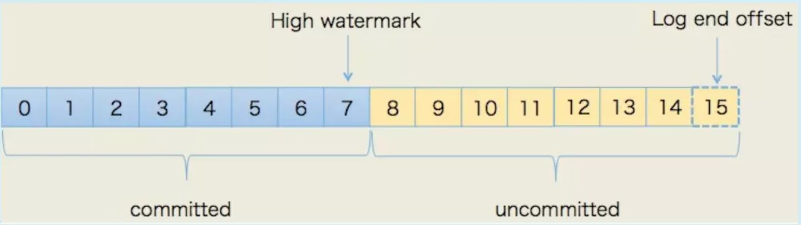已经提交的日志和未提交的日志的区别在于，Consumer是否能够消费到，所以在HW位移位置以下，即被Leader和ISR副本集合内的Follower都确认commit写入本地的消息，都可以认为是不会丢失的。所以在上图中，可被消费的消息位移范围值是[0-7]，[8-14]表示已经写入当前节点副本的本地的Log中，但还没被commit的消息日志。
Kafka副本同步消息
我们假设两个副本：Leade副本A和Follower副本B，且都ISR副本集合中，初始状态如下：
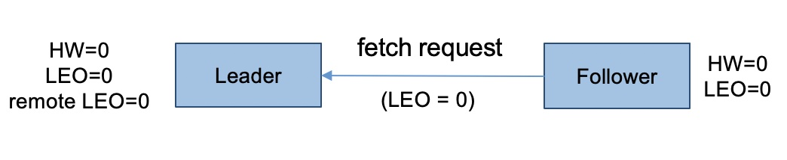Leader节点会缓存一份其它副本的LEO值（remote LEO），Leader副本会依赖remote LEO值来更新HW（ISR副本集合中的所有副本都成功写入，Leader HW才会更新）。Leader副本更新HW值=max (currentHW, min(LEO-1, LEO-2, ……，LEO-n) )，Follower副本更新HW值=min(currentHW, currentLEO)。
当Producer给分区发送一条消息后，Leader会写入到本地Log中，并更新自己的LEO；Follower会带上自己的LEO值，发起fetch request来pull数据；Leader收到请求后，会更新remote LEO和HW值，并带上自己的HW值和消息log，传输给Follower副本；Follower副本接收到消息，写入本地Log中，并更新自己的LEO值，状态变更如下：
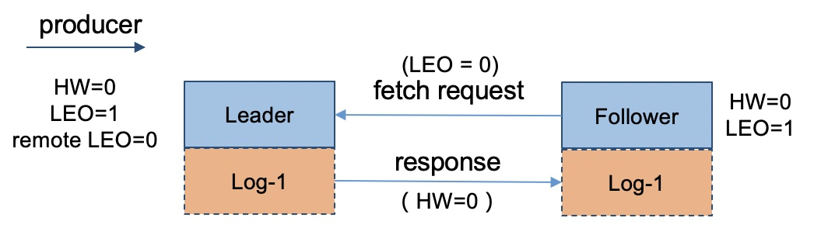各自都发送请求后，Leader和Follower副本的LEO都是1，但各自的HW依然是 0，还没有被更新。在第二次Follower发起fetch request请求后，Leader更新remote LEO=1，然后更新Leader HW为1。更新完后，Leader会将当前已更新过的HW=1的值发送给 Follower 副本，Follower副本根据min(leader hw, leo)计算来更新自己的HW值，最终状态如下：
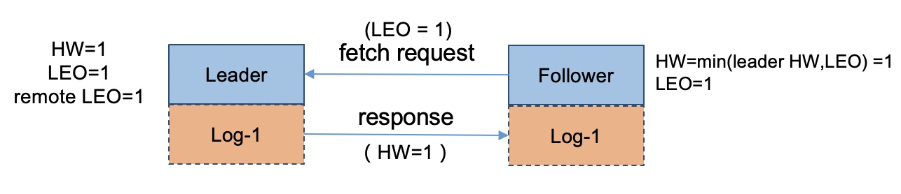了解完这些后，我们能发现，其实Follower副本的HW更新需要第二次request请求才能得到更新，也就是说Leader副本HW更新和 Follower副本HW更新在时间上是存在错位的，这种错位在某些场景下就会导致“数据丢失” 或 “数据不一致”的问题。
我们假设一个特定的场景（KAFKA/KIP-101），Follower副本写入Log后，Leader副本节点宕机或不可用状态，经过选举后Follower副本成为Leader副本。
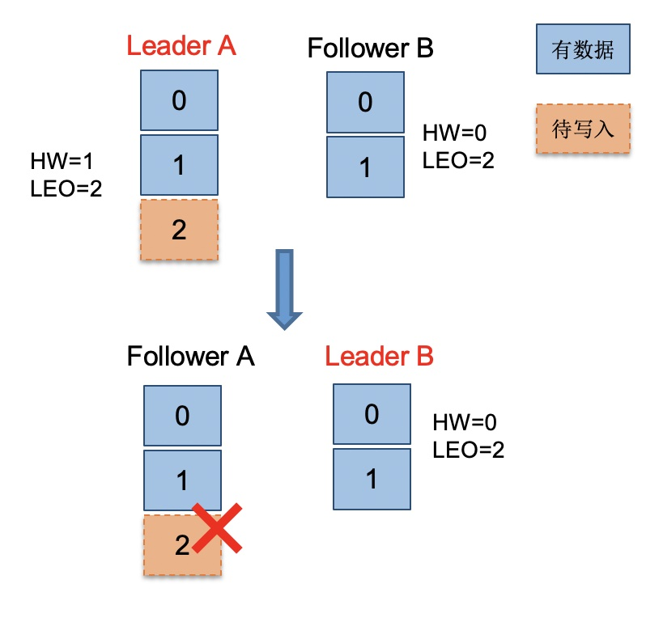情况一：数据丢失
副本B成为Leader后，发现自己的HW=0，也就是说副本B的offset=1的数据是未提交确认的，副本B会做一个日志截断(log truncation)，把offset=1的消息日志删除掉，并调整LEO=1；等副本A恢复过来，发送请求同步Leader副本B的数据，发现Leader副本的HW=0，同样也会进行一个日志截断，和Leader副本数据保持一致。
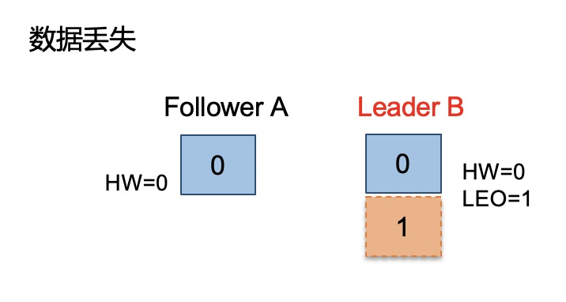这种情况会导致，原本已经写入副本A的数据会丢失，因为Producer端认为该消息日志已经提交，已经开始进行下一条消息的写入流程了，实际Kafka并没有存储到这条消息，导致Consumer根本消费不到。
情况二：数据不一致
副本B成为Leader后，也会进行日志截断，此时HW=0，LEO=1，副本A还没有恢复；当接收到了Producer发来的新消息（绿色框），副本B会更新LEO=2，HW=1，这时副本A恢复了，发送请求同步Leader副本B的数据，发现不需要进行日志截断和写入。
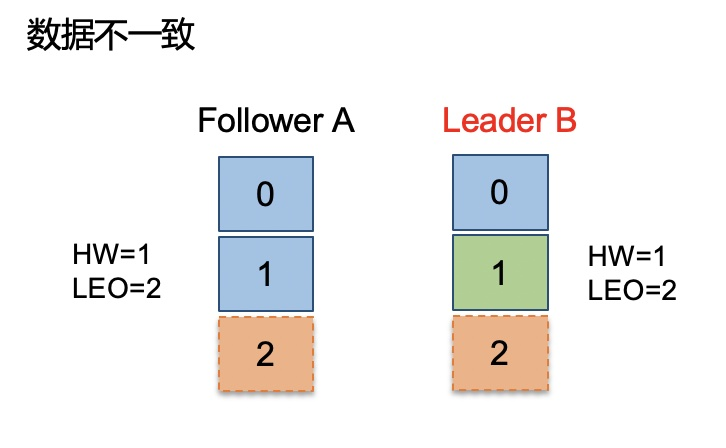这种情况会导致，Leader副本A的日志和Follower副本B的数据不一致；在下次选举切换Leader副本后，新的Consumer消费该分区的数据会和之前Consumer消费的数据部分不一致。
导致数据不一致或丢失的根本原因是HW值被用于衡量副本写入日志的成功与否以及在出现宕机恢复时，作为日志截断的位移依据；但之前我们说过，Leader副本和Follower副本的HW值的更新时间是存在时间错位的，Follower需要额外的FETCH请求才能更新HW值。
为了解决精确一致性的问题，Kafka在0.11版本，引入了Leader epoch来取代作为日志截断依据的HW值。
Leader Epoch
Leader Epoch是由一对值组成：（epoch, offset）。
- Epoch：epoch表示Leader的版本号，一个单调增加的版本号。当Leader变更过时，epoch就会+1；小版本号的 Leader 被认为是过期 Leader，不能再行使 Leader权力。
- offset：消息起始位移，Leader副本在该Epoch值上写入的首条消息的位移。
比如有两对值 (0, 0)和(1, 100)，表示第一个Leader从位移0开始写入消息；共写了100条[0, 99]；而第二个Leader版本号是1，从位移100处开始写入消息。Broker会把Leader Epoch数据缓存起来，并定期写入分区副本的日志文件leader-epoch-checkpoint中。
当Leader副本写入Log时，Broker会尝试更新，如果这个Leader首次写消息，则会在缓存中增加一条记录；而每次副本重新成为Leader时，会首先查询这部分缓存，获取出对应Leader版本的位移，在进行判断。
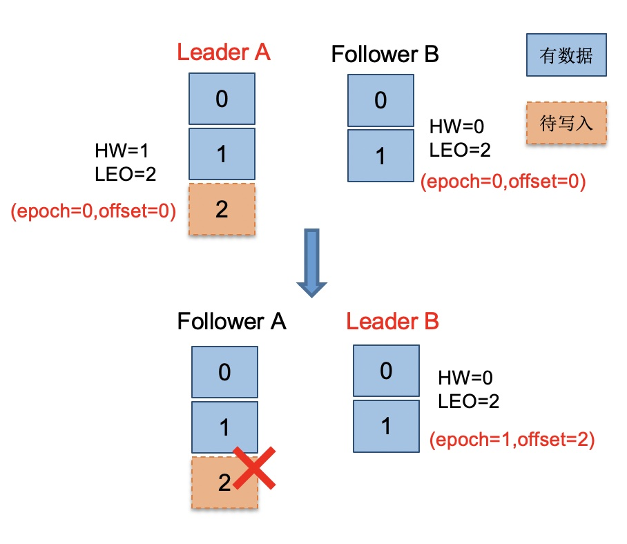我们看看数据丢失的情况：引用Leader Epoch机制后，Follower副本B需要向Leader副本A发送OffsetsForLeadErepochRequest请求并同步数据，Leader副本A返回自身的LEO=2的值，此时副本B发现Leader副本的LEO值并不比自己的LEO值小，且缓存中也没有保存任何起始位移值大于Leader副本的LEO值，故不做任何日志截断的操作。
现在Leader副本A宕机，副本B成为Leader。同样地，当副本A重启回来后，执行与副本B相同的逻辑判断，发现也不用执行日志截断，至此位移值为1的那条消息在两个副本中均得到保留。后面当Producer程序向Leader副本B写入新消息时，Leader副本B所在的 Broker缓存中，会生成新的 Leader Epoch 条目：[Epoch=1, Offset=2]。之后，副本B会使用这条记录帮助判断后续是否执行日志截断操作。这样，通过 Leader Epoch 机制，Kafka可以规避了这种数据丢失的场景。
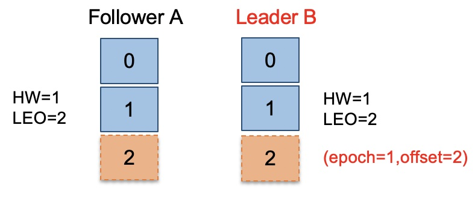我们再看看数据不一致的情况：副本B成为Leader副本后发现leader epoch缓存的位移值并没有大于自身的LEO值2，故不会做截断操作，保留了自身的offset=1的消息，并更新自身的HW=1。等副本A恢复后，发送请求同步Leader副本B的数据，执行相同的判断逻辑，也不需要进行日志截断，这样看来，两个副本的消息就保持了一致。
通过Leader Epoch机制，对高水位机制有了一个明显改进，即副本是否执行日志截断不再依赖于高水位进行判断，从而解决数据丢失和一致性问题。
总结
其实我们会发现，没有满足CAP定理的完美系统。在实现一个功能，满足一个特性的同时，还可能还会引入另外的问题。上面长篇介绍了Kafka在不同的版本增加的一些机制来解决遇到了问题，只是说明Kafka会提供一些配置参数，可以根据具体的业务需求，进行不同的配置，使得Kafka满足AP或者CP，或者使它们之间的达成一种平衡状态，这是一个tradeoff的过程。
Refer
[1] Jepsen: Kafka
[2] Please stop calling databases CP or AP
[3] Kafka/KIP-101
[4] 深入分析Kafka高可用性
[5] 浅谈CAP与Kafka